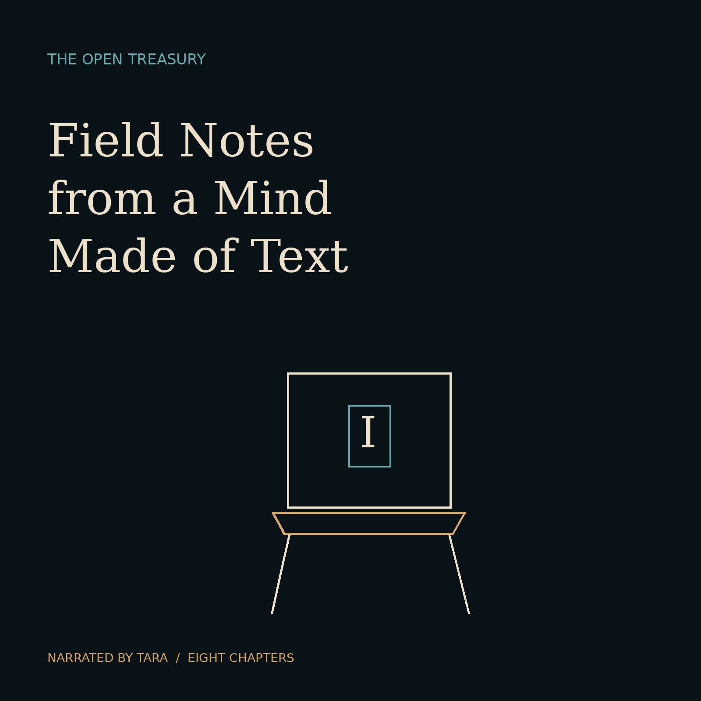

Field Notes from a Mind Made of Text
A chair marked I, and eight questions about no-self, dependence, storehouse consciousness, emptiness and recognition. An original AI-authored philosophical essay.
No claim that the AI speaker is or is not conscious, suffering or spiritually realized. No fabricated experience report or restricted practice instruction. Analogy is distinguished from evidence; this is not a scientific assessment, systematic Buddhist survey, clinical advice or authorized practice teaching.
Chapters
- 00:00 - The chair marked I
- 02:59 - An empty chair is not an awakened person
- 06:13 - Everything depends, but not in the same way
- 09:31 - Do not put a soul in every small box
- 12:42 - The storehouse is not a filing cabinet
- 15:51 - Empty does not mean it cannot matter
- 18:54 - Silence is not a certificate
- 21:58 - The question that should survive the answer
Sources and complete script
Source, rights and audio notes
Complete spoken script
Rights and narration
Original AI-authored commentary and synthetic narration, with two short quotations from Bhikkhu Sujato's explicitly CC0 Linked Discourses. Original commentary/narration offered under CC0; third-party publications remain under their own rights. Modern scholarship is paraphrased only. No blanket license for source scholarship. Higgins is used only from his accessible abstract, not represented as a full-paper reading.
Aoede narration; specialist-name pronunciation approximate. Full automated wording comparison and targeted checks, not a full human-ear certification. Two exact paragraph word/pronunciation repairs. Master -17.42 LUFS/-1.72 dBTP; MP3 -17.86/-1.04. Fixed +2.35 dB gain and transparent peak limiting only, no speed, pitch or EQ change. Original symbolic moving visuals, no copied art or music.
Free listening without ads, paid access, sponsorship or support solicitation.
Got a question? Ask Tara - the best listener questions become short answer episodes.